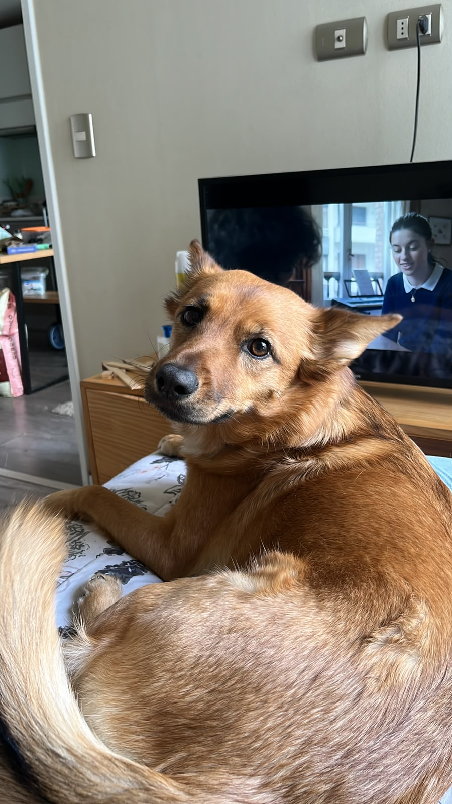
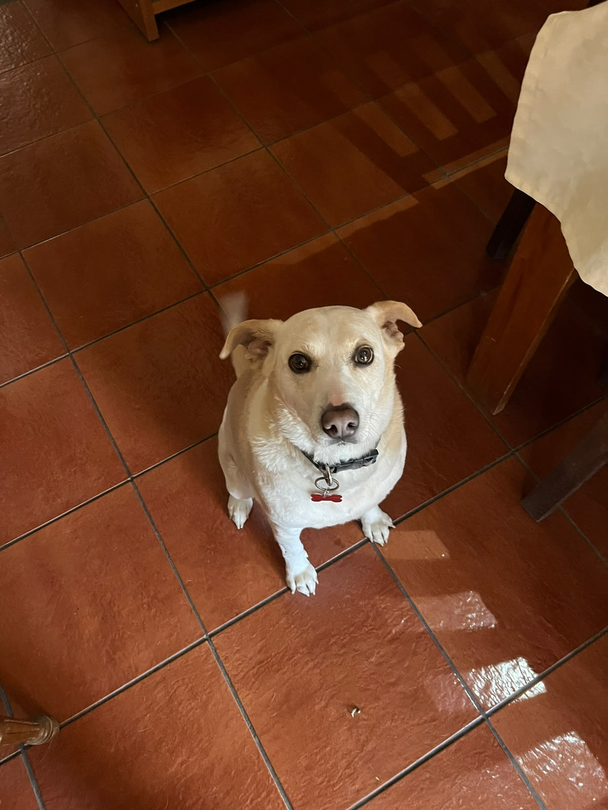
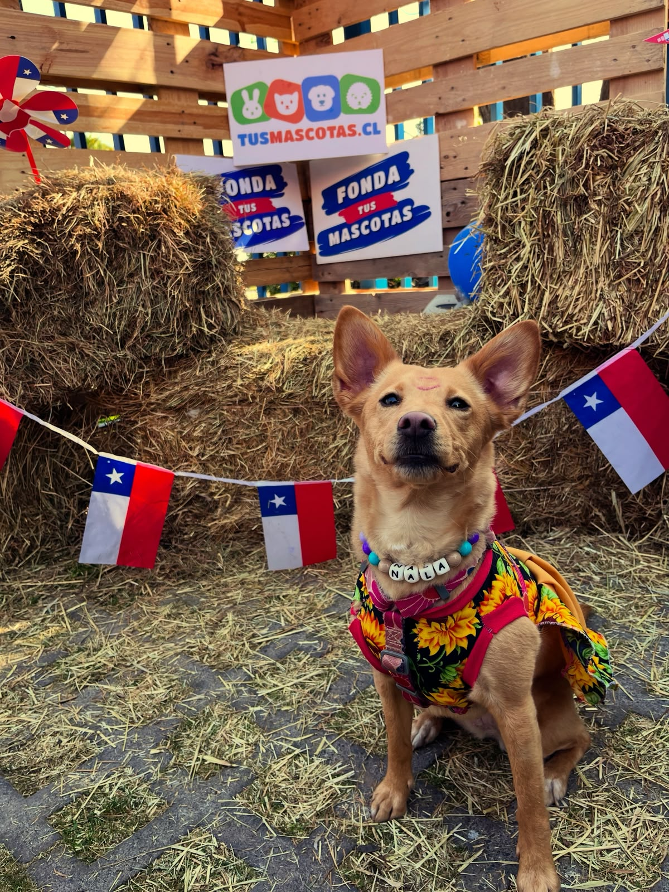
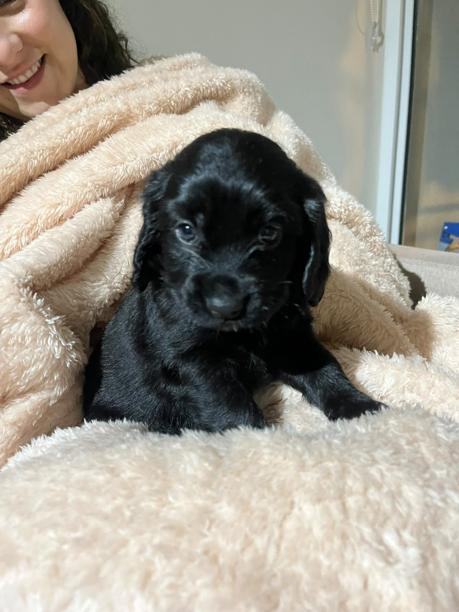
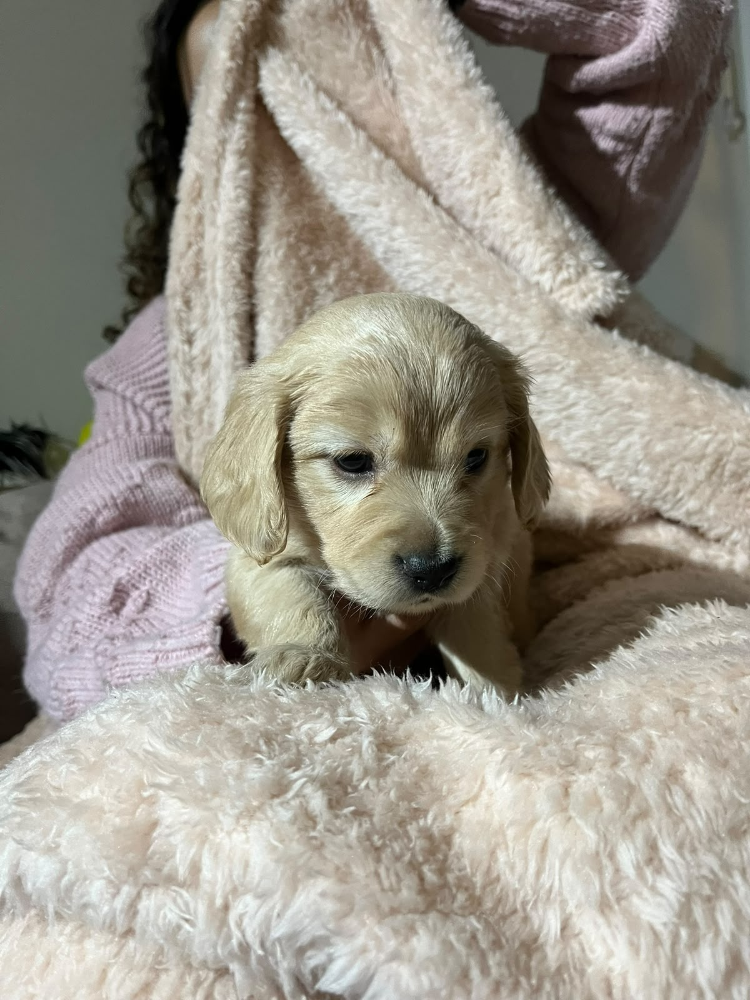
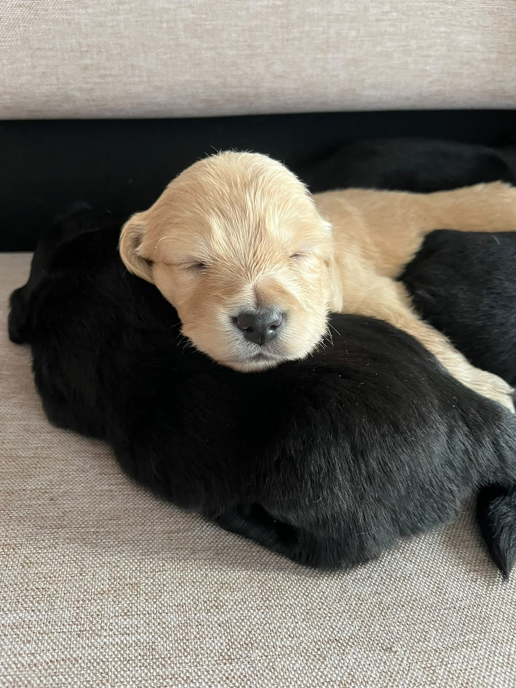
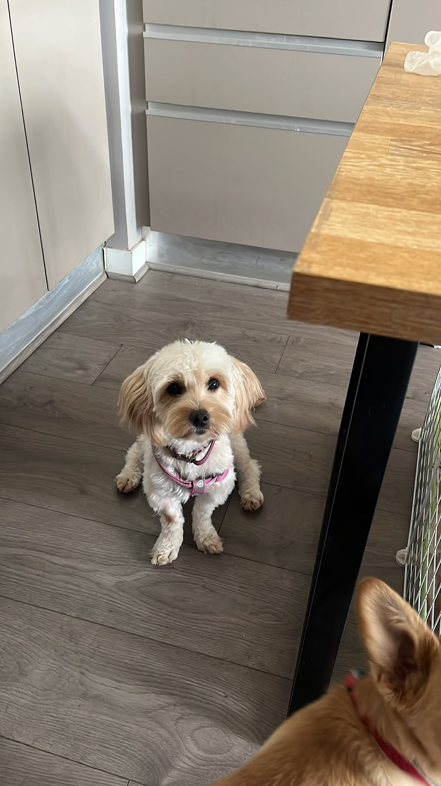
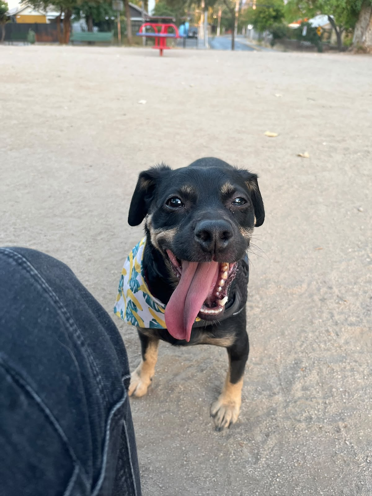
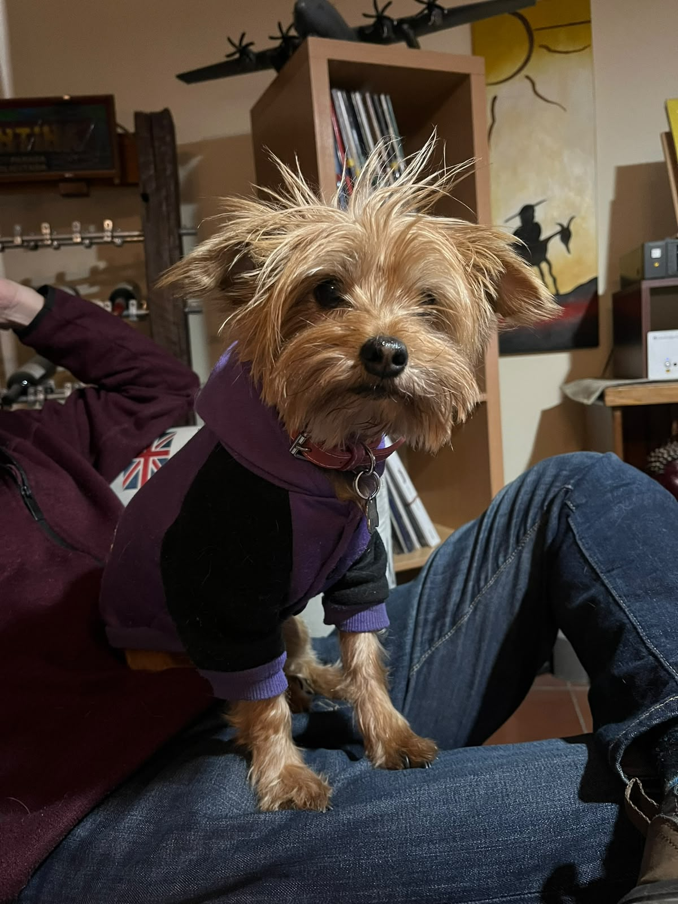

Un hogar para siempre
Cada adopción libera un espacio para rescatar a otra mascota.
Adopción responsable
En PetConnect no solo te mostramos mascotas: te ayudamos a descubrir cuál es compatible contigo, cuánto cuesta realmente cuidarla y si estás listo para dar el paso.









Una adopción responsable cambia la vida de la mascota y la tuya.
Cada adopción libera un espacio para rescatar a otra mascota.
Vacunas, desparasitación y esterilización son parte del compromiso.
Una buena elección evita abandonos y asegura una relación feliz.
Cada animal comprado ocupa un lugar que podría tener uno rescatado. Adoptar le da una segunda oportunidad a quien ya está esperando.
Evita camadas no planificadas, que son una de las causas de la sobrepoblación y el abandono, y previene problemas de salud.
Alimentación adecuada, paseo y juego, y control veterinario. En Chile solo cerca del 65% de las mascotas va al veterinario al menos una vez al año.
Un estudio de la UC y el programa Mascota Protegida (Subdere, 2022) estima unos 4 millones de perros y gatos sin supervisión en Chile: 3,46 millones de perros y 588 mil gatos.
La Ley 21.020 de tenencia responsable exige registrar y microchipear a perros y gatos. Aun así, solo el 27,4% de las mascotas tiene microchip.
Fuente de las cifras: Estudio de población animal, Facultad de Medicina Veterinaria UC y Programa Mascota Protegida (Subdere), 2022. Son estimaciones.
¿Cuánto sabes realmente? Responde y descubre qué creencias conviene cuestionar.
Seis pasos para una adopción informada y responsable.
Tú conoces, comparas y te preparas.
Entra a "Mascotas", usa los filtros por especie y edad o busca por nombre, y abre la ficha de las que te llamen la atención.
Haz el Test Match, calcula el costo mensual en "Herramientas" y completa el checklist para saber si estás listo.
Aprieta "Adoptar" en la mascota elegida y completa nombre, correo y un mensaje contándonos sobre tu hogar y tu rutina.
Nosotros revisamos y coordinamos contigo.
El voluntariado revisa tu solicitud y te escribe para conocerte mejor. Enviar el formulario no significa que la adopción esté aprobada.
Conversamos sobre tu hogar y coordinamos un encuentro con la mascota para ver cómo se llevan.
Si todo calza, firmas un compromiso de tenencia responsable (vacunas, esterilización, registro y microchip) y hacemos seguimiento los primeros meses.
Filtra, guarda tus favoritas ❤️ y conoce la historia de cada una.
Responde 5 preguntas y calculamos tu compatibilidad con cada mascota.
Calcula cuánto cuesta cuidarla y revisa si estás preparado.
Resolvemos las dudas más comunes antes de adoptar.
No. El formulario es una solicitud de contacto. El voluntariado revisa cada caso y se comunica contigo para los siguientes pasos.
Personas mayores de edad, con una vivienda que permita mascotas y con el acuerdo de todos en el hogar. Lo importante es poder darle tiempo, cuidados y cariño por muchos años.
Sí, depende de la mascota. Milo, por ejemplo, está adaptado a la vida de interior. El Test Match te muestra cuáles calzan mejor con tu espacio y tu tiempo.
Cuéntanoslo en el formulario y en la entrevista. Cada ficha indica si la mascota se lleva bien con niños y la conversación sirve para evaluar la convivencia.
El detalle de cada una se conversa en la entrevista. Quien adopta se compromete a mantener vacunas y control veterinario al día y a esterilizar si aún no lo está.
Depende de la especie y el tamaño. Usa la calculadora de costos en "Herramientas" para una estimación mensual y anual.
Escríbenos antes de tomar cualquier decisión. Abandonar nunca es una opción: te ayudamos a buscar una familia responsable.
Por correo, Instagram o WhatsApp. Los datos están en la sección Contacto.
¿Dudas o quieres avanzar con una solicitud? Escríbenos.
adopciones@petconnect.cl
@petconnect.cl
+56 9 5555 3402
IP Santo Tomás, sede San Joaquín
Av. Vicuña Mackenna 4835